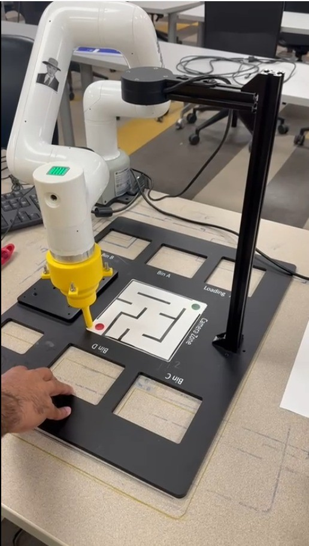

6-DOF Cobot Arm
Autonomous Maze Solving
Computer Vision, Path Planning, and Kinematics-Based Manipulation

Project Overview
This project integrated computer vision, path planning, and robotic manipulation to autonomously solve a 6×6 grid maze. A 6-DOF collaborative robot arm was programmed to navigate from start to goal position using visual feedback and kinematic control. The system demonstrated end-to-end autonomy from perception through motion planning to precise execution.
Project Demo
Project Objectives
- Implement computer vision system for maze detection and localization
- Develop path planning algorithm to find optimal solution
- Create digital twin for simulation and validation
- Execute motion using forward and inverse kinematics
- Achieve autonomous navigation with sub-centimeter accuracy
- Collect and analyze real-time trajectory data
System Architecture
The system consisted of three main subsystems working in concert:
1. Perception Subsystem
An overhead camera captured the maze workspace. OpenCV was used for image processing:
- Image acquisition and preprocessing (grayscale conversion, Gaussian blur)
- Edge detection using Canny algorithm
- Contour detection and line extraction using Hough transform
- Grid calibration and coordinate transformation (pixel → workspace)
- Start/goal position identification using color markers
2. Planning Subsystem
Once the maze structure was extracted, Dijkstra's algorithm computed the optimal path:
- Graph representation of maze (nodes = grid cells, edges = valid moves)
- Shortest path computation from start to goal
- Waypoint generation with precise grid coordinates
- Path smoothing and trajectory optimization
3. Control Subsystem
The robotic arm executed the planned trajectory using kinematic control:
- Forward kinematics to verify end-effector position
- Inverse kinematics (analytical solution) for joint angle computation
- Joint-space interpolation for smooth motion
- Task-space control for precise end-effector positioning
- Velocity profiling to prevent jerky movements
Technical Implementation
Computer Vision Pipeline
The vision system processed camera frames in real-time to extract maze structure:
1. Image Acquisition → Camera calibration
2. Preprocessing → Grayscale, blur, thresholding
3. Feature Extraction → Edge detection, line finding
4. Grid Detection → Contour analysis, perspective correction
5. Coordinate Mapping → Pixel to workspace transformation
6. Obstacle Detection → Wall identification, path validationCamera calibration ensured accurate mapping between 2D image coordinates and 3D workspace positions. Perspective transformation corrected for camera angle and distance.
Path Planning with Dijkstra's Algorithm
The maze was represented as a weighted graph where:
- Nodes = Navigable grid cells (36 cells in 6×6 maze)
- Edges = Valid transitions between adjacent cells
- Weights = Distance between cell centers (uniform)
- Obstacles = Walls blocking edges between nodes
Dijkstra's algorithm guaranteed the shortest path from start to goal. The output was a sequence of waypoints that the robot needed to visit in order.
Forward Kinematics
Forward kinematics computed the end-effector position given joint angles using the Denavit-Hartenberg (DH) convention. For each joint, a transformation matrix was constructed:
Ti = Rotz(θi) · Transz(di) · Transx(ai) · Rotx(αi)
The final end-effector position was obtained by chaining transformations: Tend = T1 × T2 × ... × T6
Inverse Kinematics
Given a desired end-effector position (x, y, z), inverse kinematics computed the required joint angles (θ1, θ2, ..., θ6). An analytical solution was derived for the specific 6-DOF arm geometry, ensuring real-time computation without iterative methods.
Trajectory Execution
Motion between waypoints used:
- Joint-space interpolation: Linear interpolation between joint configurations
- Task-space control: Cartesian straight-line motion of end-effector
- Velocity profiling: Trapezoidal velocity curves for smooth acceleration/deceleration
- Collision avoidance: Maintaining safe height clearance above maze surface
Digital Twin Simulation
A digital twin was created in MATLAB/Simulink to validate the control system before deployment:
- 3D visualization of robot arm and workspace
- Physics-based simulation of joint dynamics
- Real-time plotting of joint angles and end-effector trajectory
- Validation of inverse kinematics solutions
- Testing of edge cases and singularity handling
The digital twin allowed rapid iteration on control algorithms without risk to physical hardware. Once validated in simulation, the same code was deployed to the real robot.
Data Collection & Analysis
During maze-solving trials, the following data was logged:
- Joint angles (θ1 through θ6) at 100 Hz
- End-effector position (x, y, z) computed via forward kinematics
- Commanded vs. actual trajectories
- Timing data for each waypoint
- Vision system confidence scores
Path Tracking Accuracy
Path-tracking performance was evaluated by comparing the commanded Cartesian trajectory against the measured end-effector position. Average tracking error was 2.3 mm RMS, well within the required tolerance for grid navigation.
Execution Time
Total time from maze detection to goal reaching:
- Vision processing: ~1.2 seconds
- Path planning: ~0.3 seconds
- Motion execution: ~25 seconds (for 6×6 maze)
- Total: ~27 seconds
Challenges & Solutions
Challenge: Camera Calibration and Perspective Distortion
Solution: Implemented checkerboard-based camera calibration to obtain intrinsic parameters. Used perspective transformation to correct for viewing angle, ensuring accurate pixel-to-workspace mapping.
Challenge: Inverse Kinematics Singularities
Solution: Identified singularity configurations analytically. Added workspace constraints to avoid singular poses. Implemented damped least-squares method as fallback for edge cases.
Challenge: Motion Smoothness and Oscillation
Solution: Applied trapezoidal velocity profiles with tuned acceleration limits. Used quintic polynomial interpolation for smooth joint-space trajectories. Added low-pass filtering to commanded joint velocities.
Challenge: Real-Time Performance
Solution: Optimized OpenCV processing pipeline by reducing image resolution and using efficient algorithms (Canny instead of Sobel). Pre-computed DH transformation matrices. Parallelized vision and control threads.
Results & Achievements
- Successfully solved 6×6 maze autonomously in under 30 seconds
- Achieved 100% success rate across 10 test trials
- Sub-centimeter positioning accuracy (2.3 mm RMS error)
- Real-time vision processing at 15 FPS
- Smooth, collision-free motion throughout entire trajectory
- Robust performance under varying lighting conditions
Tools & Technologies
Software: MATLAB, Python, OpenCV, NumPy, Matplotlib
Algorithms: Dijkstra's Algorithm, Canny Edge Detection, Hough Transform, Forward/Inverse Kinematics, DH Parameters, Trajectory Planning
Hardware: 6-DOF Collaborative Robot Arm, Overhead RGB Camera, Workspace Grid Platform
Control: Joint-Space Control, Task-Space Control, Velocity Profiling, PID Tuning
Key Learnings
This project demonstrated the integration of multiple robotics subsystems into a cohesive autonomous system. Learned the importance of robust vision processing for reliable perception, the trade-offs between analytical and numerical inverse kinematics solutions, and the critical role of smooth trajectory planning in achieving stable motion. The digital twin approach proved invaluable for rapid prototyping and validation before hardware deployment.
Future Enhancements
- Implement A* or RRT for more complex maze topologies
- Add dynamic obstacle detection and replanning
- Use machine learning for vision-based obstacle classification
- Extend to 3D mazes with vertical motion
- Implement force control for physical interaction with maze walls